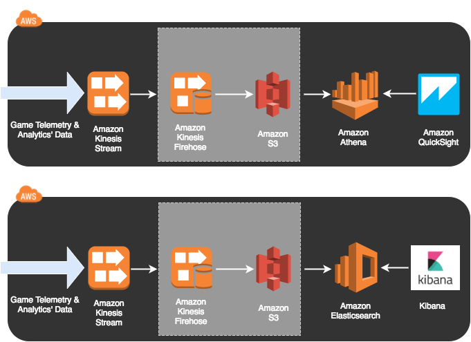

GAM310
Telemetry & Analytics’ Pipelines for Game Balancing
Lab 2 - Building a Serverless Analytics Pipeline
Lab 2 - Building a Serverless Analytics Pipeline
In the first lab, you configured Kinesis Streams and a Redshift instance, then configured Kinesis Firehose to pipe data from the Stream to Redshift. You then explored the data in QuickSight. In Lab 2 you will use Athena to see how a serverless approach can still give you interactive SQL access to your game data.
For this lab we're going to use the web console.

1. Close the introductory tutorial window (this will not appear if you've used Athena before).
2. On the left side you will see the "DATABASE" section. Click on "Create Table" dropdown, then "Automatically (AWS Glue Crawler)". This will pop up a notification that you're going to Glue. Click "Continue".
3. Click "Get started".
4. Enter a Crawler name of "workshopcrawler" and "Next"
5. The Data store should already have "S3" selected. Click the folder icon on the right side of the "Include path" and expand your workshop folder. It will be named "gamingworkshop-workshopbucket-XXXXXXXXXXXX". Inside that folder, click on "telemetry12017" and click the "Select" button, then "Next" on the Add a data store page.
6. Click "Next" on the "Add another data store" page ("No" should already be selected).
7. On the "Choose and IAM role" page, select "Create an IAM role" and enter "workshop" as the name, then click "Next".
8. On the "Create a scheduler for this crawler" page, click "Next" ("Run on demand" should already be selected).
9. On the "Configure the crawler's output" page, click the "Add databse" button, then enter "workshoptelemetrydb" and click the "Create" button. Click "Next"
10. Click "Finish". This will create the crawler and return you to the "Crawlers" page.
11. At the top should be a green banner asking if you want to run your crawler. Click "Run it now".
You've just created a Hive database. Now you need to create a table. This table describes the way in which you want to read the data from your S3 bucket. Update the bucket name in the following script, then copy and paste it into the query editor, replacing the previous script.
Now that you've set up your table, let's explore the data! The following query will tell you how many wins your game bot has had in the last 30 minutes:
Let's get QuickSight working with Athena as a Data Source!
QuickSight requires access to your S3 buckets. This can be done through your account settings, which are only available in N. Virginia. Go to Account Settings, then Account Permissions, and click the "Edit AWS permissions" button.
1. Go to https://quicksight.aws.
2. Click the "New analysis" button in the top left
6. Click the "New data set" button in the top left
7. Click the "Athena" button
8. A "New Athena data source" window will appear. For the "Data source name" enter "GamingWorkshopAthena". Click the "Validate" button on the bottom left of the window. This should turn to "Validated" with a green tick if you're successful. Click "Create data source".
9. Select "telemetry1" and click the "Select" button on the bottom right
10. Select "Directly query your data" and click the "Visualize" button on the bottom right
11. Explore your data!
You've now completed Lab 2 - click on the following button to proceed to instructions for the next lab.
Note: When a reasonable amount of participants have progressed to Lab 3, we will show a couple of slides to go over:
• the best practices for using Spot instances for testing workloads;
• to describe the archtecture of and what we're planning to achieve in lab 3; and
• to go over points worth highlighting before tackling lab 3.
If you're keen, it's perfectly fine to proceed - but it's recommended that you hit the above button and then take a break for a moment until a reasonable number of participants are ready to proceed.